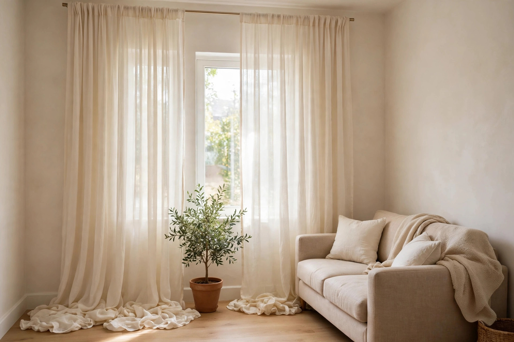

Small Living Room
Small Living Room Curtain Ideas That Make Windows Look Bigger
Intro
Curtains are the cheapest way to change how big a small living room looks. Hung wrong, they shrink the window and darken the room. Hung right, the same window looks taller, wider and brighter — and the whole room follows it.
These 12 curtain ideas are all about hanging height, length, fabric and colour. Most of them cost under $25, several cost nothing at all, and every one of them works in a rented flat.

1. Hang the rod high — $0
Mount the curtain rod 10–15 cm above the window frame, or right up to the ceiling. The eye reads the curtain from the rod down, so the window looks as tall as the rod is high. This one free move makes the biggest difference of all.
2. Go wider than the window — $0
Extend the rod 15–20 cm past the window on each side. When the curtains are open, they hang over the wall instead of over the glass, so the full window shows. The window looks wider, and more light gets in.
3. Floor-length, never sill-length — $15–$25
Curtains that stop at the sill chop the wall in half and make the room look short. Floor-length curtains draw one long line from ceiling to floor, and the room reads taller. Buy the longer length — it usually costs the same as the short one.
4. Sheer fabric for dark rooms — $10–$18
If the room gets little light, use sheer or semi-sheer curtains. They soften the window and give privacy without blocking daylight. White or cream sheers cost $10–$18 a pair and wash easily.
5. One colour, wall to curtain — $0–$20
Curtains in a colour close to the wall colour blend in, and the wall looks like one big surface instead of a window with a frame. White curtains on white walls, or cream on beige, make a small room feel calm and open.
6. Two panels, not one — $0
Two curtain panels, one on each side, frame the window symmetrically and let you open the middle fully. One wide panel always covers part of the glass, even when it is pulled aside. Two panels cost the same and look finished.
7. A slim rod, not a chunky one — $8–$15
A heavy, dark rod draws the eye and eats visual space. A slim rod in white, brass or black — about 2 cm thick — almost disappears. It costs $8–$15 and fits a rented flat because it needs only two small brackets.
8. No valance in a small room — $0
A valance or a pelmet across the top of the window cuts 20 cm off the window height. In a small room, skip it. The clean line from rod to floor is what makes the window look tall.
9. Tie-backs at two-thirds height — $3–$5
Tie curtains back at about two-thirds of their height, not at the middle. The higher tie-back lifts the line of the curtain and shows more glass. Simple fabric ties or magnetic tie-backs cost $3–$5 a pair.
10. Layer sheers under heavier curtains — $10–$20
A sheer panel behind a heavier curtain gives you two options: sheers alone in the daytime for light, both closed at night for privacy. A double rod costs $10–$20, or hang the sheer on a cheap tension rod inside the frame.
11. Wash and steam before you hang — $0
New curtains look stiff and short until they are washed and steamed. Wash them, hang them while they are still slightly damp, and let their own weight pull them straight. The length drops by a few centimetres and the folds fall properly.
12. Match the curtain to the rug, not the sofa — $0
If the curtains pick up one colour from the rug, the room ties together without matching everything. A cream curtain with a warm rug, or a grey curtain with a grey rug, makes the room feel planned — and it costs nothing to choose.
Conclusion — High, wide and long
If you only do three things, do these: hang the rod high, extend it wide, and use floor-length curtains. Those three moves make any small window look bigger.
Then choose light fabric and a colour close to the wall, and stop. Curtains should frame the window, not fight it — and in a small room, the window is the best decoration you already own.
Budget recap: Curtain pair: $15–$25; Slim rod: $8–$15; Sheers: $10–$18; Tie-backs: $3–$5. Total for a full curtain upgrade: about $25–$40, and the hanging-height trick alone costs $0.
Pinterest pin titles (3 fresh pins, same article, different designs)
- "Small Living Room Curtain Ideas That Make Windows Look Bigger"
- "Hang Curtains Like This — Small Windows Look Twice as Big"
- "12 Curtain Tricks for Small Living Rooms — Under $25"